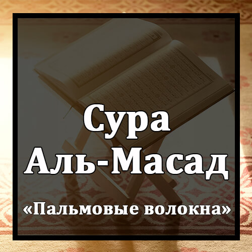

Бисмилляхир-Рахманир-Рахиим
Во имя Аллаха Милостивого и Милосердного!
Таббат Йада Аби Ляхабин Уа Табб.
Да отсохнут руки Абу Лахаба, и сам он уже сгинул.
Ма Агна `Анху Малюху Уа Ма Касаб.
Не помогло ему богатство, и он ничего не приобрел.
Сайасля Нараан Зата Ляхаб.
Он попадет в пламенный Огонь
Уамра`атуху Хаммаляталь-Хатаб.
Жена его будет носить дрова,
Фи Джидиха Хаблюн Мин Масад.
а на шее у нее будет плетеная веревка из пальмовых волокон.